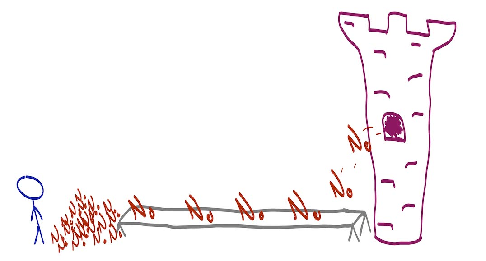

Austin Z. Henley
I work on AI + dev tools.
All my career rejections
3/21/2021

See the discussion of this post on Hacker News.
I've been reflecting on rejections lately. I've been fortunate to have more successes than I had ever imagined, but receiving a rejection email is never a fun day. I decided to write out every single rejection in my career from industry jobs, academic jobs, conference papers, and research grants.
Over 50 times I have been rejected in my short career. Gotta collect em' all!
Rejected industry positions
I first interviewed for a full-time industry position in 2013 right before graduating with my masters, and it did not go well. I've had some offers, but quite a few more rejections.
- Yelp, software engineer
- ABB Research, research intern
- Apple, software engineer
- Samsung Research, research engineer
- Adobe Research, research scientist
- Impira, software engineer
- Kite, software engineer
- Microsoft Research, research scientist
- Microsoft, program manager
- Repl.it, product engineer
- Apple, research scientist
Rejected academic positions
Typing this list out makes it feel really long. I was very fortunate to receive numerous offers even though I didn't expect to get a single one. Big thanks to my Ph.D. advisor, Scott Fleming, and mentor, Margaret Burnett, for their help preparing me.
- Texas A&M University
- Case Western Reserve University
- Temple University
- University of South Carolina
- Clemson University
- University of Utah
- University of Massachusetts, Amherst
- University of Minnesota, Twin Cities
- University of Notre Dame
- Virginia Tech
- Cornell University
- Northeastern University
- University of Southern California
- Kent State University
- University of Chicago
- Boston University
- Duke University
- Washington University in St. Louis
- University of California, Irvine
- Rice University
- Oregon State University
- University of Rochester
- Vanderbilt University
- University of Alabama, Birmingham
- University of Texas, Dallas
- University of Colorado, Boulder
- University of Pennsylvania
Rejected conference papers
Paper rejections don't sting anymore. I seem to have about a 50% acceptance rate with my submissions. And with the help of many great collaborators, I've co-authored strong papers that have won several awards. The rejections are inevitable and generally lead to a better paper anyway, right?
- IEEE VL/HCC 2014
- ACM/IEEE ICSE 2015
- ACM/IEEE ICSE 2016
- ACM CHI 2017
- ACM FSE 2017
- IEEE VL/HCC 2017
- ACM CHI 2018
- ACM CHI 2019
- ACM CHI 2019
- ACM UIST 2019
- AAAI HCOMP 2019
- ACM CHI 2020
- IEEE VL/HCC 2020
Rejected grants
I've had two grant proposals funded and two rejected, so I should probably submit more...
- NSF SHF small grant
- Google Research Scholar Program
More rejections to come!